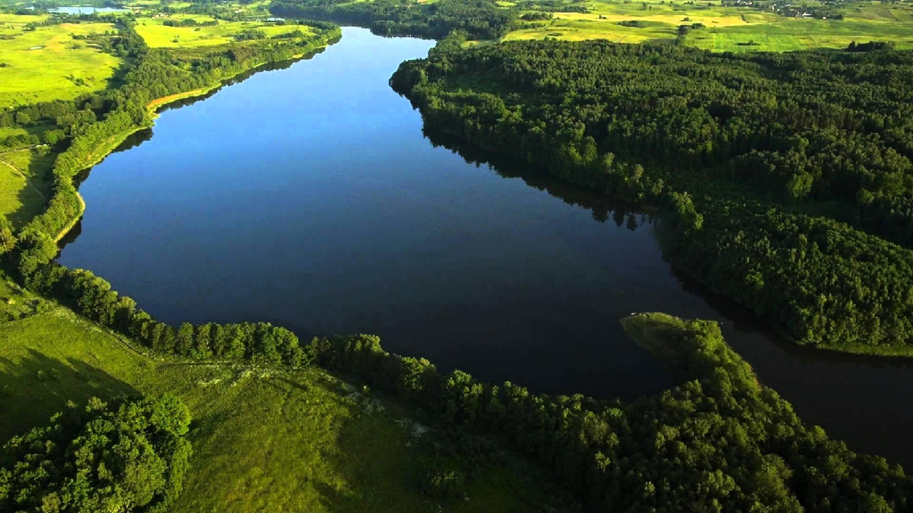
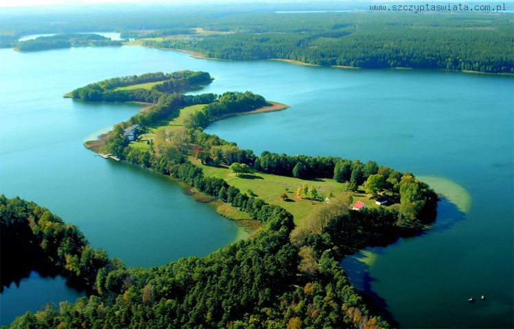
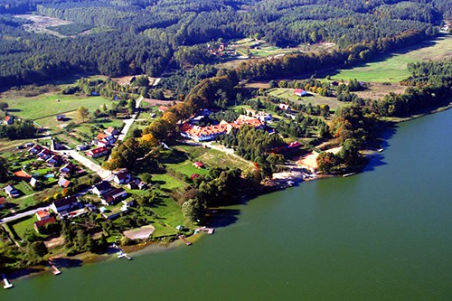

Moje zainteresowania to programowanie, muzyka, książki i tortilla z serem :3 Oprócz tego dodaje drugie zdanie bo tak było w zadaniu he
PowrótZdjęcie z Masuria!
ZamknijZdjęcie z Masuria!
ZamknijZdjęcie z Masuria!
ZamknijMoje zainteresowania to programowanie, muzyka, książki i tortilla z serem :3 Oprócz tego dodaje drugie zdanie bo tak było w zadaniu he
Powrót